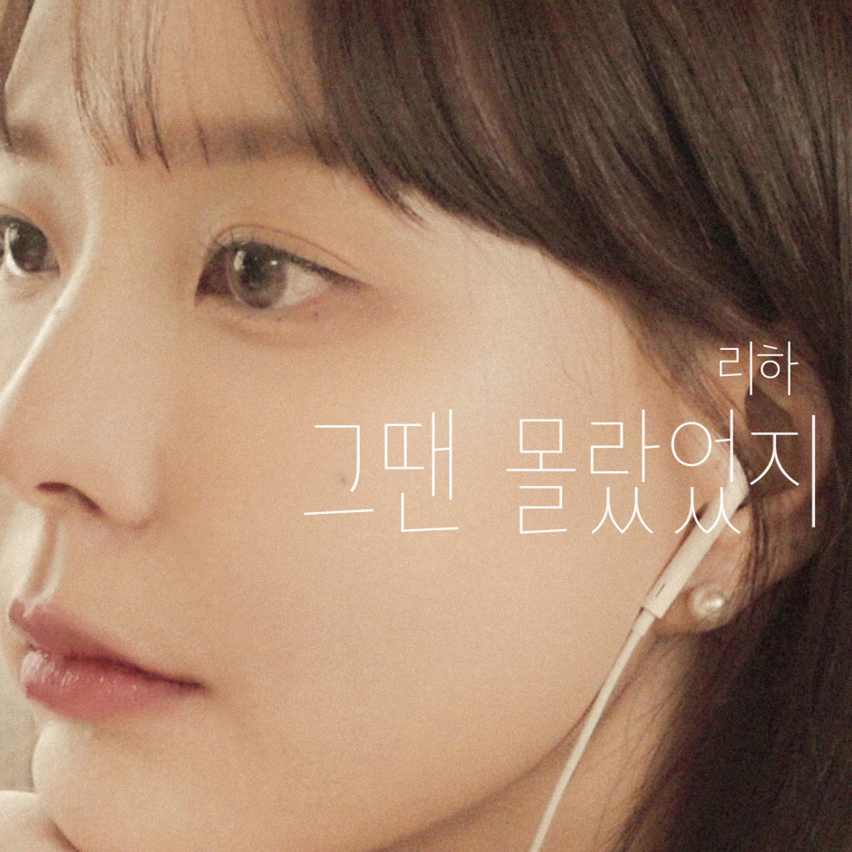
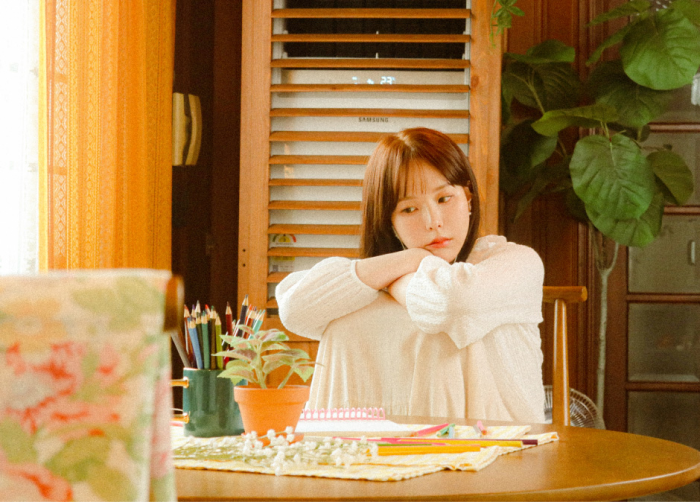

ARTIST.
리하 (LIHA)
안녕하세요, 벅스 가족 여러분!
리하 (LIHA)의 생애 첫 리메이크 도전이자 웹드라마 '청춘유랑단' OST 앨범, [그땐 몰랐었지]가 11월 29일 발매되었습니다.
리하 (LIHA)의 새 싱글 앨범 [그땐 몰랐었지]의 뮤직비디오 촬영 현장을 지금! 벅스에서 단독 공개합니다!
ALBUM.
싱글 앨범 [그땐 몰랐었지 (웹드라마 '청춘유랑단' OST)]
1
그땐 몰랐었지
리하 (LIHA)
[그땐 몰랐었지]의 원곡은 밴드 피치스(PICHS)가 2013년에 발표한 어쿠스틱 발라드 곡입니다.
올 봄 [왜 또 설레]에서 달달하고 감성적인 보이스로 아름답고 설레는 마음을 가득 담았다면,
이번 싱글 [그땐 몰랐었지]에서는 달콤 쌉싸름한 청춘의 감성을 담고 있습니다.
BEHIND.
리하 (LIHA) '그땐 몰랐었지' MV 촬영 현장
달콤 쌉싸름한 청춘의 감성을 담은 리하의 MV 촬영 현장을 보러 가실까요?? 여기는 리하의 그땐 몰랐었지 MV 촬영 현장인데요.

리하가 깊은 생각에 잠겨 있네요.